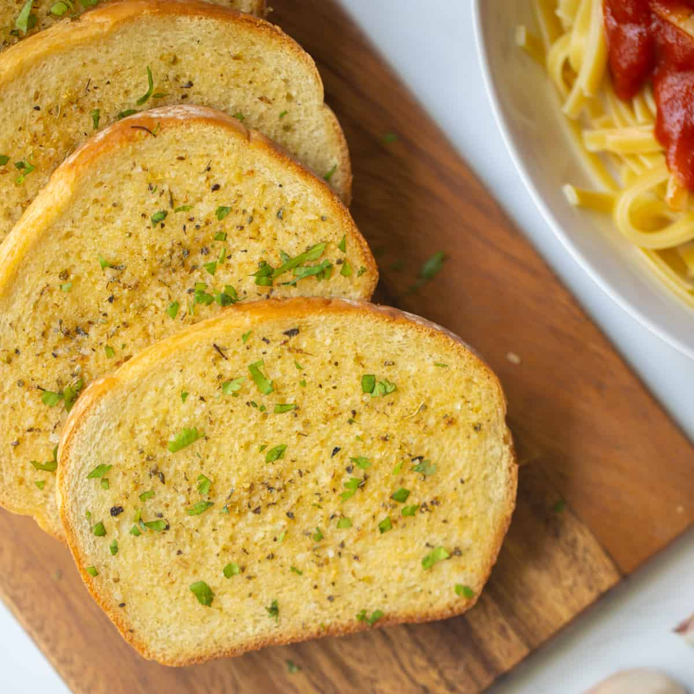

Garlic Toast

Description
Honestly, I am going to skip this part because isn't it everyone's pet peeve when there is a whole memoir attached to the beginning of a recipe and you have to scroll down a million pages to even see the ingredients?
Ingredients
- 8 slices thick white bread
- 6 tablespoons unsalted butter, softened
- 1 teaspoon garlic powder
- ¼ teaspoon kosher salt
- ½ teaspoon dried oregano
Steps
- Preheat oven to 400℉205℃ and line a baking sheet with parchment paper.
- In a small bowl mix together 6 tablespoons unsalted butter (softened) with 1 teaspoon garlic powder, ¼ teaspoon kosher salt, and ½ teaspoon dried oregano until evenly combined.
- Spread each side of 8 slices thick white bread with the prepared garlic butter and place onto the prepared baking sheet.
- Place the baking sheet into the preheated oven and toast for 4-5 minutes. Flip the bread, and continue to bake for 3-5 minutes, or until the bread is fully golden and toasted.
Home